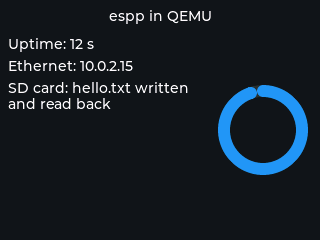

Running espp in QEMU#
Espressif’s fork of QEMU emulates the ESP32, ESP32-C3 and ESP32-S3 well enough to run real firmware with no hardware at all: on a laptop, in CI, or in a container. This page is the practical recipe for espp projects; the QEMU documentation and the ESP-IDF QEMU guide have the full detail.
What the emulator offers#
Emulated on all three targets: the CPU, interrupts and timers, UART, GPIO, the SPI flash with its MMU and encryption, eFuse and the RNG, the crypto accelerators, TWAI, an OpenCores Ethernet MAC and a virtual RGB panel (neither exists on real silicon). ESP32 only: the SD/MMC host, LEDC and PSRAM. Not emulated anywhere: Wi-Fi, BLE, USB, I2C, I2S, SPI peripherals, RMT.
So the components that gain real coverage are the ones whose target-specific
layer is flash, FreeRTOS, lwIP or one of those peripherals: NVS,
persistent_data, file_system, OTA, coredump, system, the socket
components, RTPS, sdcard, and every LVGL user interface. Anything driven
over I2C, I2S, Wi-Fi, BLE or USB (most sensors, codecs and BSPs) cannot run.
Timing is not cycle-accurate: QEMU is for functional and regression tests,
not for performance numbers (memory high-water marks are exact, though).
The QEMU board component wraps the three virtual peripherals (display, Ethernet, SD card) with the same shape as the real-board BSPs, and its example exercises all three.
Install#
The emulators install like any other ESP-IDF tool (they are also part of the
espressif/idf Docker image):
python $IDF_PATH/tools/idf_tools.py install qemu-xtensa qemu-riscv32
. $IDF_PATH/export.sh
Run an example#
idf.py qemu builds the flash and eFuse images, adds the Ethernet NIC and
runs the right emulator for the configured target:
cd components/qemu/example
idf.py set-target esp32 build
dd if=/dev/zero bs=1M count=64 of=sd.img # a blank SD card (ESP32 only)
idf.py qemu --graphics --qemu-extra-args "-drive file=sd.img,if=sd,format=raw" monitor
--graphics opens the panel window; monitor attaches ESP-IDF’s serial
monitor (Ctrl-] quits). Without the trailing monitor, idf.py qemu
runs the emulator in the foreground with the serial port and the QEMU monitor
multiplexed on the terminal (Ctrl-A C switches between them, Ctrl-A X
quits). For esp32c3 and esp32s3 just set-target accordingly and
drop the SD drive (QEMU emulates the SD/MMC host on the ESP32 machine only). The same idf.py flags work for any espp example whose peripherals
are emulated; set CONFIG_ETH_USE_OPENETH=y (and
CONFIG_ETH_USE_ESP32_EMAC=n) in its sdkconfig to use the emulated NIC.
The display needs a display backend#
The virtual panel’s driver hands each drawn area to QEMU and waits for QEMU to
take it. With -nographic or -display none nothing ever does, and the
first LVGL flush spins forever: the application appears to hang right after
the display is initialized (verified on the ESP32 and ESP32-C3 machines). Keep
-display sdl (what --graphics passes) and, for a run without a window,
point SDL at its off-screen driver:
SDL_VIDEODRIVER=dummy idf.py qemu --graphics monitor
That is also the form for CI. A screenshot of the panel is one monitor command away, window or not. Give QEMU a monitor socket (the path must be shorter than 104 bytes) and, while it runs, write the command to that socket from a second terminal (or background the emulator first and wait for the socket to appear):
# terminal 1
SDL_VIDEODRIVER=dummy idf.py qemu --graphics \
--qemu-extra-args "-monitor unix:/tmp/mon.sock,server,nowait"
# terminal 2, once the application is up
echo "screendump /tmp/shot.ppm" | nc -U /tmp/mon.sock
magick /tmp/shot.ppm shot.png


The QEMU example’s screen, captured with screendump from a headless run.#
Networking#
idf.py qemu adds -nic user,model=open_eth: QEMU’s user-mode NAT. The
DHCP client gets 10.0.2.15, the host is 10.0.2.2, DNS is 10.0.2.3.
Outbound TCP and UDP work; a server in the guest needs a port forward
(--qemu-extra-args "-nic user,model=open_eth,hostfwd=tcp::8080-:80"); and
multicast does not cross to the host, so protocols that discover peers by
multicast (RTPS, mDNS) need a tap device. On Linux:
sudo ip tuntap add dev tap0 mode tap user $USER
sudo ip addr add 192.168.100.1/24 dev tap0
sudo ip link set tap0 up
idf.py qemu --graphics --qemu-extra-args "-nic tap,ifname=tap0,script=no,downscript=no,model=open_eth" monitor
with the firmware either serving DHCP (espp::Qemu::DhcpMode::SERVER) or
using a static address on that subnet. The emulated MAC has no multicast
address filter (ESP-IDF logs add mac address to filter not supported when
lwIP joins a group); multicast frames are received regardless.
Debugging#
idf.py qemu gdb starts the emulator halted with a GDB server and attaches
GDB; idf.py qemu --qemu-extra-args "-d in_asm,cpu" traces execution. eFuse
programming (idf.py qemu efuse-burn ...) writes a qemu_efuse.bin next
to the build, so secure-boot and flash-encryption flows can be rehearsed
without touching a real chip.
What to expect from each example#
Most espp examples need a board (I2C, I2S, Wi-Fi, USB) and will stop at the
first peripheral that is not emulated. The QEMU board example runs as-is.
Examples built only on the core components and storage (nvs,
persistent_data, file_system, cli over the serial console) run
once their project builds for an emulated target; networking examples that
bring up their own board’s Ethernet or Wi-Fi need their interface replaced by
espp::Qemu::initialize_ethernet() first. The RTPS interop firmware
(components/rtps/interop/qemu) is the worked example: the embedded engine
on the emulated MAC, run by CI in QEMU on a tap device against ROS 2 and the
host engine, with fault injection. Treat a hang right after
display initialization as the missing display backend described above, and a
not supported from esp_lcd_new_rgb_qemu as the application running on
real hardware.